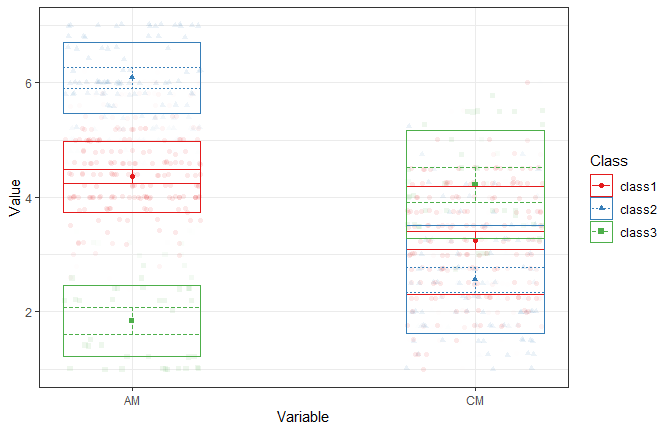
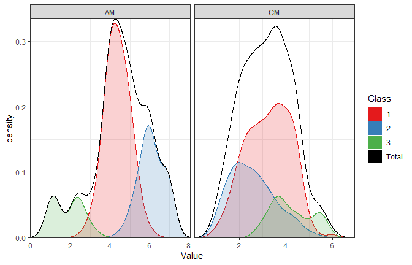
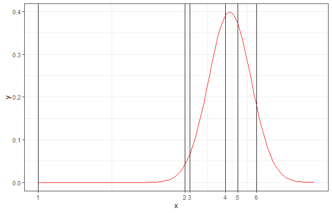
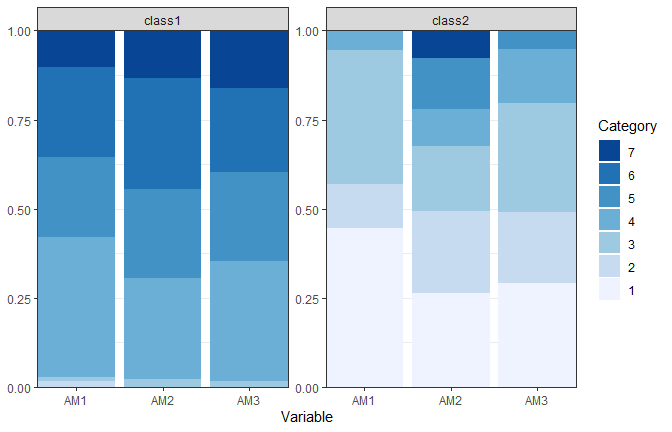
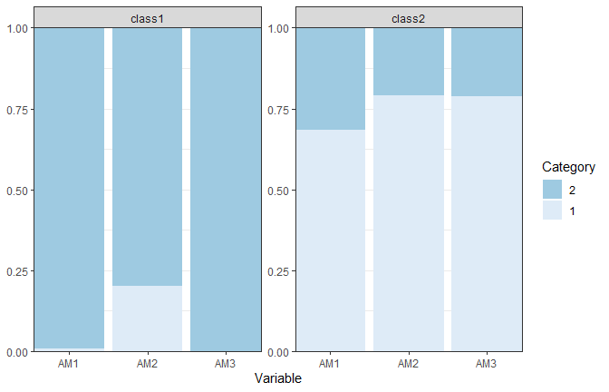
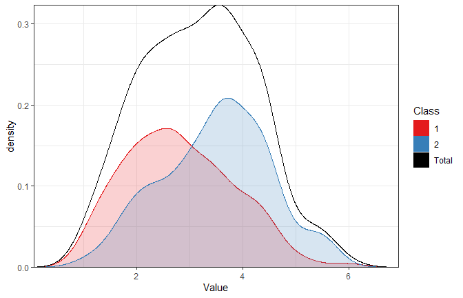
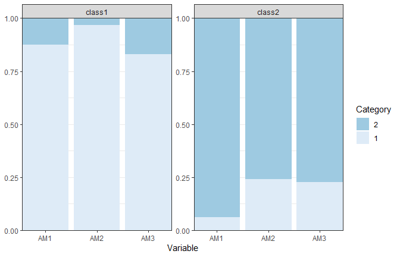
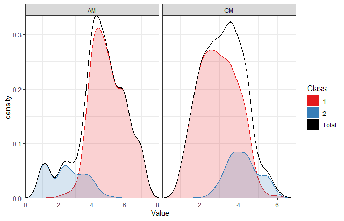

This vignette covers the core ideas behind LCA, and takes you through the estimation of models with continuous, ordinal, and dichotomous indicators, and combinations of these. We focus on the practical decisions researchers face: evaluating model fit, assessing classification accuracy, interpreting model parameters, and reporting results clearly with publication-ready tables and figures. After this vignette, you should be able to:
Note that this vignette roughly follows the steps outlined in the SMART-LCA Checklist (Standards for More Accuracy in Reporting of different Types of Latent Class Analysis), as introduced in Van Lissa, C. J., Garnier-Villarreal, M., & Anadria, D. (2023). Recommended Practices in Latent Class Analysis using the Open-Source R-Package tidySEM. Structural Equation Modeling..
Pre-Analysis
In this case, we’re estimating LCAs as toy examples to become familiar with the technique. This application of LCA is purely exploratory (there is no theory about the number and kind of classes). We are unsure if the indicators are valid and reliable for LCA, and our sample size is predetermined by the data available for secondary analysis. We will use data from Zhao K, Zhao Y, Xu W. Relationship between middle school students’ academic stress and physical exercise behavior from the perspective of Self-Determination Theory: The chained mediation of motivation and intention. PLoS One. 2025 Jan 3;20(1):e0316599.
These data are available in the object zhao_2025, and we
can load them as follows:
Run View(df) to inspect the data.
Examining Observed Data
Now, inspect descriptive statistics for the variables in the dataset. This is an important initial data-screening step because it helps us understand the structure of the data and identify features such as variable ranges, means, standard deviations, missing values, and the number of unique observed values.
table_desc <- descriptives(df)
table_desc
#> name type n missing unique mean median mode mode_value
#> 1 ID numeric 290 0.003436426 182 153.131034 158 158 NA
#> 2 Grade numeric 291 0.000000000 3 2.010309 2 2 NA
#> 3 Age numeric 291 0.000000000 5 13.732907 14 14 NA
#> 4 Gender numeric 291 0.000000000 2 1.635739 2 2 NA
#> 5 TS1 numeric 291 0.000000000 7 2.920962 3 3 NA
#> 6 TS2 numeric 291 0.000000000 7 3.072165 3 3 NA
#> 7 TS3 numeric 290 0.003436426 7 2.403448 2 2 NA
#> 8 TS4 numeric 291 0.000000000 7 2.783505 3 3 NA
#> 9 SOS1 numeric 290 0.003436426 7 4.665517 5 5 NA
#> 10 SOS2 numeric 290 0.003436426 7 3.296552 3 3 NA
#> 11 SOS3 numeric 290 0.003436426 7 2.631034 2 2 NA
#> 12 SOS4 numeric 290 0.003436426 7 2.889655 3 3 NA
#> 13 PS1 numeric 291 0.000000000 7 4.463918 4 4 NA
#> 14 PS2 numeric 291 0.000000000 7 2.587629 2 2 NA
#> 15 PS3 numeric 287 0.013745704 7 3.059233 3 3 NA
#> 16 PS4 numeric 291 0.000000000 7 3.034364 3 3 NA
#> 17 PS5 numeric 288 0.010309278 7 2.868056 2 2 NA
#> 18 AM1 numeric 290 0.003436426 7 4.327586 4 4 NA
#> 19 AM2 numeric 288 0.010309278 7 4.729167 5 5 NA
#> 20 AM3 numeric 290 0.003436426 7 4.575862 5 5 NA
#> 21 AM4 numeric 291 0.000000000 7 4.505155 4 4 NA
#> 22 AM5 numeric 290 0.003436426 7 4.593103 5 5 NA
#> 23 CM1 numeric 290 0.003436426 7 2.968966 3 3 NA
#> 24 CM2 numeric 291 0.000000000 7 2.872852 3 3 NA
#> 25 CM3 numeric 290 0.003436426 7 3.372414 4 4 NA
#> 26 CM4 numeric 289 0.006872852 7 3.463668 4 4 NA
#> 27 BI1 numeric 290 0.003436426 7 4.644828 5 5 NA
#> 28 BI2 numeric 289 0.006872852 7 4.740484 5 5 NA
#> 29 BI3 numeric 289 0.006872852 7 4.806228 5 5 NA
#> 30 BH1 numeric 291 0.000000000 7 5.020619 5 5 NA
#> 31 BH2 numeric 288 0.010309278 7 3.329861 3 3 NA
#> sd v min max range skew skew_2se kurt kurt_2se
#> 1 84.8178390 NA 2 289 287 -0.13605878 -0.47538950 -1.23702373 -2.16834100
#> 2 0.8885654 NA 1 3 2 -0.02020154 -0.07070456 -1.73796112 -3.05157911
#> 3 0.9584744 NA 12 15 3 -0.14993992 -0.52478349 -0.98374543 -1.72729813
#> 4 0.4820513 NA 1 2 1 -0.56706905 -1.98471816 -1.69009615 -2.96753595
#> 5 1.5235871 NA 1 7 6 0.35810259 1.25334423 -0.57152889 -1.00351246
#> 6 1.4568323 NA 1 7 6 0.20397798 0.71391447 -0.73878365 -1.29718480
#> 7 1.5560981 NA 1 7 6 0.97736229 3.41490469 0.13192871 0.23125379
#> 8 1.5639923 NA 1 7 6 0.38543102 1.34899258 -0.84100869 -1.47667547
#> 9 1.6072448 NA 1 7 6 -0.20393909 -0.71256336 -0.80307039 -1.40767748
#> 10 1.7235360 NA 1 7 6 0.45232786 1.58043393 -0.66280704 -1.16181415
#> 11 1.7464949 NA 1 7 6 0.84850098 2.96466317 -0.34828509 -0.61049827
#> 12 1.4366302 NA 1 7 6 0.50510413 1.76483428 -0.44207245 -0.77489526
#> 13 1.7363965 NA 1 7 6 -0.18766355 -0.65681466 -0.79781285 -1.40083054
#> 14 1.6510346 NA 1 7 6 0.84891591 2.97117049 -0.18677644 -0.32794927
#> 15 1.6994374 NA 1 7 6 0.39324544 1.36694733 -0.98904728 -1.72483072
#> 16 1.8454570 NA 1 7 6 0.47961096 1.67861846 -0.92685506 -1.62740783
#> 17 1.7138360 NA 1 7 6 0.64148536 2.23368727 -0.56809490 -0.99241401
#> 18 1.6532230 NA 1 7 6 -0.43602530 -1.52347277 -0.37259837 -0.65311628
#> 19 1.5979898 NA 1 7 6 -0.64387068 -2.24199308 -0.08372378 -0.14625841
#> 20 1.6075417 NA 1 7 6 -0.44502468 -1.55491660 -0.22795609 -0.39957724
#> 21 1.5522423 NA 1 7 6 -0.26869691 -0.94042803 -0.23399890 -0.41086428
#> 22 1.5739952 NA 1 7 6 -0.53473329 -1.86835856 0.05989265 0.10498399
#> 23 1.6117225 NA 1 7 6 0.72478103 2.53238553 0.02339709 0.04101204
#> 24 1.5134974 NA 1 7 6 0.42162188 1.47565911 -0.50157333 -0.88068179
#> 25 1.4715048 NA 1 7 6 0.32791591 1.14573847 0.01942356 0.03404696
#> 26 1.5875695 NA 1 7 6 0.33686541 1.17499766 -0.33952285 -0.59412939
#> 27 1.4651868 NA 1 7 6 -0.55047037 -1.92334396 0.26543133 0.46526645
#> 28 1.3963448 NA 1 7 6 -0.77666405 -2.70902985 0.60647064 1.06126003
#> 29 1.5288303 NA 1 7 6 -0.87923548 -3.06680238 0.45955236 0.80416846
#> 30 1.7359051 NA 1 7 6 -0.53371071 -1.86796534 -0.49033875 -0.86095567
#> 31 1.4502952 NA 1 7 6 0.64559662 2.24800289 0.29855650 0.52155308The type column tells you the measurement level of each
variable. The tidySEM package supports latent class
analysis with numeric (or integer) and
ordered variables.
Numeric and integer variables should be truly continuous (e.g., centimeters), or you must be willing to assume that they behave as continuous (scale mean scores in a questionnaire).
Ordinal indicators consist of categories that have a meaningful order, such as Likert responses ranging from strongly disagree to strongly agree.
Note that integer variables containing only a small number of values
could be numeric score, but could also be ordered. The correct treatment
depends on what the numbers mean, not merely on how R stores them. Check
the unique column of descriptives() to see how
many unique values there are; this may alert you to such issues.
If you have variables with other data types than numeric/integer/ordered - you will need to convert them.
One key issue is that variables are not always correctly stored. The
type column may not correspond to the variable’s
substantive measurement level. For example, you might have a variable of
type integer with values 1, 2, but which
actually represents employment, with values Unemployed and
Employed. Moreover, an integer variable may represent a
truly continuous quantity (e.g., number of children), or an ordinal
Likert scale, in which case it should be recoded to
ordered. Similarly, a factor may represent an unordered
categorical variable with several categories. For LCA, each category
should be coded as a binary ordered variable.
You should therefore inspect both the variable type and the meaning of the variable before deciding how it should enter the model.
Data Preprocessing
If a variable is incorrectly coded, you may be able to restore its correct type. Here are a few examples of type conversions:
# This is a character variable, because someone misstyped a t:
v1 <- c("5.1", "4.9", "4.7", "4.6t", "5", "5.4")
class(v1)
#> [1] "character"
# You can turn it into numeric; the mistyped value is lost:
as.numeric(v1)
#> [1] 5.1 4.9 4.7 NA 5.0 5.4
# This is an integer variable representing a Likert scale:
v2 <- c(2L, 3L, 2L, 5L, 3L, 4L)
class(v2)
#> [1] "integer"
# You can turn it into ordered:
ordered(v2)
#> [1] 2 3 2 5 3 4
#> Levels: 2 < 3 < 4 < 5
# This is a factor variable:
v3 <- factor(c("Medicine", "Humanities", "Humanities", "Medicine", "Social science",
"Medicine"))
class(v3)
#> [1] "factor"
# You can encode it as multiple binary dummmies:
tidySEM::mx_dummies(v3)
#> Humanities Medicine Social.science
#> 1 0 1 0
#> 2 1 0 0
#> 3 1 0 0
#> 4 0 1 0
#> 5 0 0 1
#> 6 0 1 0The final command takes an unordered factor and represents it as a set of binary dummy variables; one for each category. These dummy variables can then be added to the analysis dataset.
Note that, in our example dataset, all variable types
are numeric, even though some must be integer (age), and others must be
factors (Gender) or ordered (all Likert scales). Note that all variables
have just few low number of unique values; this is another hint that
some recoding is in order.
Here we recode ‘gender’ from its original numeric codes into a factor variable. We also attach meaningful text labels to the numeric categories so that subsequent tables and output are easier to understand. The ‘levels’ argument specifies the original codes found in the dataset, while ‘labels’ specifies the corresponding category names that R should display instead.
Several variables in the dataset are individual questionnaire items that belong to broader multi-item scales.
We can use these to practice two things:
- Computing numeric scale mean scores
- Encoding them as ordered variables
We will compute the scale scores first, because this still requires
these variables to be numeric.
For example, the scale named TS consists of TS1 through TS4, while SOS consists of SOS1 through SOS4. I like to store this information in a list, as this would allow you to, for example, easily perform psychometric analyses for every scale automatically (which is out of scope for the current tutorial).
# To prepare the scales list, I used:
scales_list <- grep("\\w{2}\\d", names(df), value = TRUE)
scalenames <- unique(gsub("\\d", "", scales_list))
scales_list <- lapply(scalenames, grep, x = names(df), value = TRUE)
names(scales_list) <- scalenames
# This gives the list below; you can also construct it for your dataset by hand:
scales_list <- list(
TS = c("TS1", "TS2", "TS3", "TS4"),
SOS = c("SOS1", "SOS2", "SOS3", "SOS4"),
PS = c("PS1", "PS2", "PS3", "PS4", "PS5"),
AM = c("AM1", "AM2", "AM3", "AM4", "AM5"),
CM = c("CM1", "CM2", "CM3", "CM4"),
BI = c("BI1", "BI2", "BI3"),
BH = c("BH1", "BH2")
)To compute mean scale scores, we can use:
df_scales <- sapply(scales_list, function(items){
rowMeans(df[, items, drop = FALSE], na.rm = TRUE)
})
# Add them to df:
df <- data.frame(df, df_scales)Second, the encode these items as ordered variables, we could grab
all relevant variables based on the naming pattern (these variable names
end with a number), or we can take all items in the
scales_list using unlist():
ord_vars <- grep("\\d$", names(df), value = TRUE)
ord_vars
#> [1] "TS1" "TS2" "TS3" "TS4" "SOS1" "SOS2" "SOS3" "SOS4" "PS1" "PS2"
#> [11] "PS3" "PS4" "PS5" "AM1" "AM2" "AM3" "AM4" "AM5" "CM1" "CM2"
#> [21] "CM3" "CM4" "BI1" "BI2" "BI3" "BH1" "BH2"
# Or alternatively:
ord_vars <- unlist(scales_list)Then, we can recode these variables as ordered:
df[ord_vars] <- lapply(df[ord_vars], ordered)Inspect the cleaned dataset again before fitting the model. Check that numeric indicators really represent continuous quantities, ordered indicators have the intended category order, and binary indicators contain exactly two possible response categories. Also check for unexpected values, unused factor levels, miscoded missing values, and variables with little or no variation.
Missing Data
This dataset has no missing data. However, you can increase the challenge for yourself by adding some missingness. If you want to do this - do it immediately after loading the data and removing the empty rows, with code like this:
Regardless of the presence of missingness or not,
tidySEM uses FIML which includes cases with partially
missing data.
Model Specification
The type of model you can specify depends partially on the measurement level of your indicators:
| Indicator type | Typical examples | tidySEM function | Class-specific quantities |
|---|---|---|---|
| Continuous | test scores, reaction time, symptom sum scores | mx_profiles() |
means, variances, possibly covariances |
| Ordinal | Likert items, ordered severity categories | mx_lca() |
category probabilities / thresholds |
| Dichotomous | yes/no, present/absent, correct/incorrect | mx_lca() |
response probabilities |
| Mixed | a combination of the above | mx_mixed_lca() |
parameters appropriate to each indicator type |
Latent Profile Analysis (LPA) with Continuous Indicators
We will use two scale scores from the Zhao dataset as a teaching
example; specifically, c("AM", "CM"), which represent
autonomous and controlled motivation. You can increase the challenge
level of this tutorial by using your own dataset, or by selecting
different scales. For example, c("TS", "SOS", "PS"), which
represent three sources of stress/pressure: teacher stress, social
stress, and parent stress.
df_lpa <- df[, c("AM", "CM")]Note that standardizing indicators is not required and should not affect results, with two caveats: if continuous indicators are on very different scales (e.g., the variance differs by a factor 10+), this can cause problems for model convergence. Second, this can make plots harder to read because the plotting range of one variable could be much smaller than another.
Model Specification
The arguments variances and covariances
control the model specification for LPA. For example, a model with equal
variances and zero covariances assumpes that every indicator has the
same residual variance across classes, and that indicators are “locally
independent” (=uncorrelated) within each class, even if they should be
correlated at the sample level. Note that you can also specify different
(co)variance structures, either for thorough exploration of because you
have some theory about e.g., smaller variance in some classes, or
different correlations between classes. See the help file by running
?mx_profiles. For example, you could specify the code
below.
Note that this analysis will take a very long time because these are many models and some of them are hard to estimate. For any computationally intensive analyses like this, we can save the results to a file, so you can load the results from that file directly without having to wait for the code to run. We do recommend that you experiment with running some analyses yourself, of course.
res_lpa <- mx_profiles(
df_lpa,
classes = 1:5,
variances = c("equal", "varying"),
covariances = c("zero", "equal")
)
saveRDS(res_lpa, "res_lpa_different_spect.rds")
res_lpa <- readRDS("res_lpa_different_spect.rds")
format_numeric(table_fit(res_lpa))
#> Name Classes LL n Parameters AIC BIC
#> 1 equal var 1 1.00 -951.56 291.00 4 1911.12 1925.81
#> 2 equal var 2 2.00 -914.57 291.00 7 1843.14 1868.86
#> 3 equal var 3 3.00 -900.31 291.00 10 1820.62 1857.35
#> 4 equal var 4 4.00 -887.52 291.00 13 1801.03 1848.79
#> 5 equal var 5 5.00 -882.70 291.00 16 1797.41 1856.18
#> 6 free var, equal cov 1 1.00 -920.19 291.00 5 1850.37 1868.74
#> 7 free var, equal cov 2 2.00 -901.28 291.00 10 1822.56 1859.29
#> 8 free var, equal cov 3 3.00 -888.53 291.00 15 1807.07 1862.17
#> 9 free var, equal cov 4 4.00 -879.28 291.00 20 1798.56 1872.03
#> 10 free var, equal cov 5 5.00 -866.36 291.00 25 1782.71 1874.54
#> saBIC Entropy prob_min prob_max n_min n_max np_ratio np_local
#> 1 1913.13 1.00 1.00 1.00 1.00 1.00 72.75 72.75
#> 2 1846.66 0.79 0.77 0.98 0.16 0.84 41.57 15.33
#> 3 1825.64 0.68 0.82 0.87 0.12 0.44 29.10 13.12
#> 4 1807.56 0.86 0.85 0.95 0.06 0.56 22.38 7.20
#> 5 1805.44 0.73 0.76 0.96 0.07 0.32 18.19 7.92
#> 6 1852.88 1.00 1.00 1.00 1.00 1.00 58.20 58.20
#> 7 1827.58 0.58 0.87 0.88 0.48 0.52 29.10 31.33
#> 8 1814.60 0.78 0.83 0.93 0.18 0.52 19.40 12.00
#> 9 1808.60 0.78 0.79 0.92 0.13 0.37 14.55 8.71
#> 10 1795.26 0.80 0.82 0.94 0.09 0.43 11.64 6.19More complex models are not automatically better: extra parameters can create unstable solutions, tiny classes, or local maxima. Think about which models make sense to estimate, and how many classes your data could reasonably support.
Maximum Number of Classes
We can set an upper limit on the number of classes to estimate, for example, by saying we want to aim for 20 observations per parameter, if cases would be evenly split between classes. We could then estimate 290/20 = 14.5 parameters. With 2 indicators, zero covariances, and equal variances, the number of parameters for our model is:
- k-1 mixture weights
- k*2 means
- 2 variances
Which would give this many cases per parameter:
k <- 1:10
nrow(df) / (1+3*k)
#> [1] 72.750000 41.571429 29.100000 22.384615 18.187500 15.315789 13.227273
#> [8] 11.640000 10.392857 9.387097So we could estimate at least 4 classes. Let’s round up and estimate 1:5 class solutions:
res_lpa <- mx_profiles(
df_lpa,
classes = 1:5,
variances = "equal",
covariances = "zero"
)
saveRDS(res_lpa, "res_lpa_equal.rds")
res_lpa <- readRDS("res_lpa_equal.rds")Class Enumeration
First, extract a model fit table:
tab_lpa_fit <- table_fit(res_lpa)
tab_lpa_fit
#> Name Classes LL n Parameters AIC BIC saBIC
#> 1 equal var 1 1 -951.5584 291 4 1911.117 1925.810 1913.125
#> 2 equal var 2 2 -914.5721 291 7 1843.144 1868.857 1846.659
#> 3 equal var 3 3 -893.3834 291 10 1806.767 1843.500 1811.788
#> 4 equal var 4 4 -894.5514 291 13 1815.103 1862.856 1821.630
#> 5 equal var 5 5 -882.7029 291 16 1797.406 1856.179 1805.440
#> Entropy prob_min prob_max n_min n_max np_ratio np_local
#> 1 1.0000000 1.0000000 1.0000000 1.00000000 1.0000000 72.75000 72.750000
#> 2 0.7857956 0.7652851 0.9799943 0.15807560 0.8419244 41.57143 15.333333
#> 3 0.8365064 0.8968019 0.9439567 0.12714777 0.5807560 29.10000 13.875000
#> 4 0.7317583 0.5928521 0.8994559 0.04467354 0.4432990 22.38462 5.200000
#> 5 0.7291737 0.7585690 0.9551134 0.06529210 0.3230241 18.18750 7.916667BIC
One well-supported criterion for class enumeration is the BIC: a relative fit index that rewards good fit and penalizes model complexity. The absolute BIC value has no substantive meaning; you can compare BIC values of models fitted to the same data, and lower values are preferred. We can see that the three-class model has the lowest BIC:
which.min(tab_lpa_fit$BIC)
#> [1] 3BLRT
We can also conduct a bootstrapped likelihood ratio test, which asks
whether a model with
classes improves fit over a model with
classes. However, this test is extremely computationally expensive.
Before we do so, it is useful to check if we can eliminate some models
from consideration (also see next section). For example, note that
np_local, the minimum number of cases assigned to a class
divided by the number of parameters in that class, is as low as 2.4 for
models with 4-5 classes. You want a healthy number of cases per
parameter, so we can exclude these two models, then perform our
BLRT:
res_lpa_blrt <- res_lpa
res_lpa_blrt[c(4, 5)] <- NULL
res_blrt <- BLRT(res_lpa_blrt)
saveRDS(res_blrt, "res_blrt_intro.rds")
res_blrt <- readRDS("res_blrt_intro.rds")
res_blrt
#> Bootstrapped Likelihood Ratio Test:
#>
#> null alt lr df blrt_p samples
#> mix1 mix2 74.0 3 0 99
#> mix2 mix3 42.4 3 0 95We see that adding classes leads to a significant improvement in model fit.
Eliminating Models from Consideration
As mentioned before, we will eliminate the 4-5 class models because they have a very low number of observations per parameter.
We can also check model diagnostics for any problems with
convergence, parameter values near the boundaries, et cetera. If one of
these checks fails, you can examine a detailed report by running
mx_diagnostics(res_lpa[[model_numer]]), where
model_number is the number of the failing model:
sapply(res_lpa, function(i) mx_diagnostics(i)$checks_pass)
#> equal var 1 equal var 2 equal var 3 equal var 4 equal var 5
#> TRUE TRUE TRUE TRUE TRUEAnother consideration is that classification diagnostics are poor for the 4-5 class models:
tab_lpa_fit[, c("Entropy", "prob_min", "prob_max")]
#> Entropy prob_min prob_max
#> 1 1.0000000 1.0000000 1.0000000
#> 2 0.7857956 0.7652851 0.9799943
#> 3 0.8365064 0.8968019 0.9439567
#> 4 0.7317583 0.5928521 0.8994559
#> 5 0.7291737 0.7585690 0.9551134The entropy statistic is an overall summary of class separation, where values approaching 1 indicate clear delineation of classes [@celeuxEntropyCriterionAssessing1996].
The statistics prob_min and prob_max give
us the minumum and maximum of the diagonal of the
mostlikely.class classification table (see
?class_prob). If C is the true class of an observation, and
N is the most likely class based on the model, then this table shows the
probability P(N==i|C==j). The diagonal represents the probability that
observations in each class will be correctly classified. We see that
prob_min is very low for the 4-5 class models; thus, for
some classes, there is a low probability that its members will be
correctly classified. This is also reflected in the entropy.
Reporting Results
We already obtained the model fit table. There are many ways to prepare it for a scientific paper. The regular formatting function in R has some peculiar behavior; it does not guarantee that a certain number of decimals are displayed. This is a design choice in R, and has to do with the principle of “significant figures”. However, APA style simply requires reporting to double digits. So let’s consider two options:
# Standard R formatting, some columns get 3 digits, some get 1, but they remain
# numeric type:
tab_lpa_fit_formatted <- format(tab_lpa_fit, digits = 2)
tab_lpa_fit_formatted
#> Name Classes LL n Parameters AIC BIC saBIC Entropy prob_min
#> 1 equal var 1 1 -952 291 4 1911 1926 1913 1.00 1.00
#> 2 equal var 2 2 -915 291 7 1843 1869 1847 0.79 0.77
#> 3 equal var 3 3 -893 291 10 1807 1843 1812 0.84 0.90
#> 4 equal var 4 4 -895 291 13 1815 1863 1822 0.73 0.59
#> 5 equal var 5 5 -883 291 16 1797 1856 1805 0.73 0.76
#> prob_max n_min n_max np_ratio np_local
#> 1 1.00 1.000 1.00 73 72.8
#> 2 0.98 0.158 0.84 42 15.3
#> 3 0.94 0.127 0.58 29 13.9
#> 4 0.90 0.045 0.44 22 5.2
#> 5 0.96 0.065 0.32 18 7.9
# Using format_numeric; reports 2 digits, but all columns become
# character type:
tab_lpa_fit_formatted <- format_numeric(tab_lpa_fit, digits = 2)
write.csv(tab_lpa_fit_formatted, "tab_lpa_fit.csv", row.names = FALSE)Based on the BIC, the elimination of the 4-5 class models, and significant BLRT tests, we would retain a 3-class model.
The class proportions of this model are:
class_prob(res_lpa[[3]], "sum.posterior")
#> $sum.posterior
#> class count proportion
#> 1 class1 167.04337 0.5740322
#> 2 class2 85.72086 0.2945734
#> 3 class3 38.23577 0.1313944We can examine the parameters of this model as follows:
tab_lpa_res <- table_results(res_lpa[[3]])
tab_lpa_res
#> label est_sig se pval confint class
#> 1 Means.AM.class1 4.36*** 0.07 0.00 [4.23, 4.49] class1
#> 2 Means.CM.class1 3.24*** 0.08 0.00 [3.09, 3.40] class1
#> 3 Variances.AM.class1 0.39*** 0.04 0.00 [0.30, 0.48] class1
#> 4 Variances.CM.class1 0.89*** 0.08 0.00 [0.74, 1.04] class1
#> 5 Means.AM.class2 6.09*** 0.09 0.00 [5.91, 6.27] class2
#> 6 Means.CM.class2 2.56*** 0.11 0.00 [2.34, 2.78] class2
#> 7 Means.AM.class3 1.84*** 0.12 0.00 [1.60, 2.08] class3
#> 8 Means.CM.class3 4.22*** 0.16 0.00 [3.91, 4.53] class3
#> 9 mix3.weights[1,1].NA 1.00 <NA> <NA> <NA> <NA>
#> 10 mix3.weights[1,2].NA 0.51*** 0.09 0.00 [0.34, 0.69] <NA>
#> 11 mix3.weights[1,3].NA 0.23*** 0.04 0.00 [0.14, 0.32] <NA>Notice that we get one estimate for the variances (because these are equal across classes), no covariances, and unique estimates for the means across classes.
The pattern of results is easier to see when plotting it:
plot_profiles(res_lpa[[3]])
plot_density(res_lpa[[3]])
Examining the class-specific means, we see that Class 1 has moderate values on both indicators, whereas Class 2 does not have high means on both autonomous motivation (AM) and controlled motivation (CM).
The marginal (whole-sample) distributions of both indicators are approximately normal. Combined with the relatively low class separability, this raises an important question: Do the data really contain distinct latent classes? It is possible that the identified classes merely represent differences along continuous dimensions rather than qualitatively distinct subgroups. We should therefore seriously consider whether a model without latent classes might provide a more parsimonious explanation of the data.
Latent Class Analysis with Ordinal indicators
We can conduct ordinal LCA by using some of the raw items underlying the scale scores, for example:
df_lca <- df[, c("AM1", "AM2", "AM3")]For a model with ordinal indicators, there is (currently) only one parametrization available. Specifically, we represent each ordinal variable as a latent normal variable with thresholds representing the quantiles of people who score a particular score or lower. In these models, each variable will have a number of thresholds equal to the number of response options minus one. It is easy to see that this model will have more parameters than the LPA model. If L is the number of levels of our ordinal indicators, and M is the number of indicators:
- k-1 mixture weights
- k((L-1)M) thresholds
Since our indicators have 7 categories, this gives:
k <- 1:10
L <- length(unique(df_lca$AM1))
M <- ncol(df_lca)
nrow(df) / ((k-1)+k*((L-1)*M))
#> [1] 13.857143 6.767442 4.476923 3.344828 2.669725 2.221374 1.901961
#> [8] 1.662857 1.477157 1.328767Note that even for a 1-class model, we have fewer than 20 observations per parameter. Thus, we might doubt whether we have enough data here to estimate more than one class. For educational purposes - we will proceed, but to save time estimating overly complex models, we omit the 4-5 class models.
res_lca <- readRDS("res_lca_intro.rds")
tab_lca_fit <- table_fit(res_lca)
tab_lca_fit
#> Name Classes LL n Parameters AIC BIC saBIC Entropy
#> 1 1 1 -1538.279 291 18 3112.558 3178.678 3121.596 1.0000000
#> 2 2 2 -1378.727 291 37 2831.455 2967.368 2850.033 0.9389693
#> 3 3 3 -1286.189 291 56 2684.378 2890.084 2712.496 0.9332435
#> prob_min prob_max n_min n_max warning np_ratio np_local
#> 1 1.0000000 1.0000000 1.0000000 1.0000000 NA 16.166667 16.166667
#> 2 0.9710441 0.9876977 0.2302405 0.7697595 TRUE 7.864865 3.722222
#> 3 0.9469730 0.9882293 0.2302405 0.4536082 TRUE 5.196429 3.722222The BIC indicates that adding classes improves model fit. However,
even for the 2-class model, the number of cases/parameters in the
smallest class (np_local) is smaller than 10. Thus, we
might be skeptical about selecting more than 1 class for these data. For
educational purposes, however, let’s examine the 2-class solution.
tab_lca_res <- table_results(res_lca[[2]])
tab_lca_res
#> label est_sig se pval confint class
#> 1 Variances.AM1.class1 1.00 <NA> <NA> <NA> class1
#> 2 Variances.AM2.class1 1.00 <NA> <NA> <NA> class1
#> 3 Variances.AM3.class1 1.00 <NA> <NA> <NA> class1
#> 4 class1.Thresholds[1,1].class1 -9.05 27.22 0.74 [-62.40, 44.29] class1
#> 5 class1.Thresholds[1,2].class1 -17.42 27.82 0.53 [-71.94, 37.10] class1
#> 6 class1.Thresholds[1,3].class1 -18.00 27.78 0.52 [-72.46, 36.46] class1
#> 7 class1.Thresholds[2,1].class1 -2.12 54.44 0.97 [-108.81, 104.58] class1
#> 8 class1.Thresholds[2,2].class1 -13.11 55.64 0.81 [-122.15, 95.94] class1
#> 9 class1.Thresholds[2,3].class1 -15.76 55.57 0.78 [-124.67, 93.15] class1
#> 10 class1.Thresholds[3,1].class1 -1.90 81.81 0.98 [-162.24, 158.44] class1
#> 11 class1.Thresholds[3,2].class1 -1.99 83.45 0.98 [-165.56, 161.57] class1
#> 12 class1.Thresholds[3,3].class1 -2.10 83.35 0.98 [-165.47, 161.27] class1
#> 13 class1.Thresholds[4,1].class1 -0.20 108.04 1.00 [-211.95, 211.55] class1
#> 14 class1.Thresholds[4,2].class1 -0.50 110.24 1.00 [-216.56, 215.55] class1
#> 15 class1.Thresholds[4,3].class1 -0.38 109.93 1.00 [-215.84, 215.08] class1
#> 16 class1.Thresholds[5,1].class1 0.37 125.42 1.00 [-245.46, 246.20] class1
#> 17 class1.Thresholds[5,2].class1 0.14 129.66 1.00 [-253.98, 254.27] class1
#> 18 class1.Thresholds[5,3].class1 0.26 128.24 1.00 [-251.09, 251.61] class1
#> 19 class1.Thresholds[6,1].class1 1.27 133.02 0.99 [-259.44, 261.98] class1
#> 20 class1.Thresholds[6,2].class1 1.11 138.75 0.99 [-270.85, 273.06] class1
#> 21 class1.Thresholds[6,3].class1 0.99 137.90 0.99 [-269.28, 271.27] class1
#> 22 Variances.AM1.class2 1.00 <NA> <NA> <NA> class2
#> 23 Variances.AM2.class2 1.00 <NA> <NA> <NA> class2
#> 24 Variances.AM3.class2 1.00 <NA> <NA> <NA> class2
#> 25 class2.Thresholds[1,1].class2 -0.14 13.64 0.99 [-26.88, 26.60] class2
#> 26 class2.Thresholds[1,2].class2 -0.64 15.09 0.97 [-30.21, 28.94] class2
#> 27 class2.Thresholds[1,3].class2 -0.55 14.40 0.97 [-28.76, 27.67] class2
#> 28 class2.Thresholds[2,1].class2 0.18 27.14 0.99 [-53.02, 53.37] class2
#> 29 class2.Thresholds[2,2].class2 -0.01 28.66 1.00 [-56.18, 56.15] class2
#> 30 class2.Thresholds[2,3].class2 -0.02 27.69 1.00 [-54.30, 54.25] class2
#> 31 class2.Thresholds[3,1].class2 1.59 29.57 0.96 [-56.37, 59.55] class2
#> 32 class2.Thresholds[3,2].class2 0.46 38.56 0.99 [-75.12, 76.04] class2
#> 33 class2.Thresholds[3,3].class2 0.83 34.02 0.98 [-65.85, 67.51] class2
#> 34 class2.Thresholds[4,1].class2 7.71 29.57 0.79 [-50.24, 65.67] class2
#> 35 class2.Thresholds[4,2].class2 0.77 46.70 0.99 [-90.75, 92.30] class2
#> 36 class2.Thresholds[4,3].class2 1.62 36.55 0.96 [-70.03, 73.26] class2
#> 37 class2.Thresholds[5,1].class2 8.24 29.57 0.78 [-49.72, 66.19] class2
#> 38 class2.Thresholds[5,2].class2 1.42 50.65 0.98 [-97.85, 100.70] class2
#> 39 class2.Thresholds[5,3].class2 8.52 36.55 0.82 [-63.12, 80.16] class2
#> 40 class2.Thresholds[6,1].class2 10.10 29.57 0.73 [-47.86, 68.05] class2
#> 41 class2.Thresholds[6,2].class2 1.43 52.30 0.98 [-101.09, 103.94] class2
#> 42 class2.Thresholds[6,3].class2 11.65 36.55 0.75 [-59.99, 83.29] class2
#> 43 mix2.weights[1,1].NA 1.00 <NA> <NA> <NA> <NA>
#> 44 mix2.weights[1,2].NA 0.29 46.92 0.99 [-91.67, 92.26] <NA>
#>
#> Note: Standard errors are unavailable or non-finite.
#> Note: Hessian is not positive definite.We see that all the parameters are thresholds (and a mixture weight).
These thresholds are z-values at which a standard normal distribution would be intersected so that the proportion of participants falling below the threshold corresponds to the proportion of particiants who selected that answer category or lower. We can plot this to give you an intuitive understanding, for example, for the thresholds for variable AM1 in class 1:
library(ggplot2)
thresholds <- res_lca[[2]]$class1$Thresholds$result[, "AM1"]
ggplot(data.frame(x = c(-4, 4)), aes(x = x)) +
stat_function(fun = dnorm, color = "red") +
geom_vline(xintercept = thresholds) +
scale_x_continuous(breaks = thresholds, labels = 1:6) +
theme_bw()
This figure implies that the most common response to AM1 in class 1 is 6, quite a few people score 5 or 7, and very few people score 4 or below. We can do a sanity check to confirm this interpretation by assigning people to their most likely class (note that this ignores classification uncertainty), and then tabulating the observed scores of AM1 for the people who are assigned class 1:
individual_class <- predict_class(res_lca[[2]])
table(df$AM1[individual_class == 1])
#>
#> 1 2 3 4 5 6 7
#> 0 4 1 89 50 57 23Another way to interpret the threshold parameters is to convert them to the estimated probability of choosing each response category:
tab_lca_prob <- table_prob(res_lca[[2]])
# Let's format it for easier visual interpretation:
format_numeric(tab_lca_prob, digits = 2)
#> Variable Category Probability group
#> 1 AM1 1 0.00 class1
#> 2 AM1 2 0.02 class1
#> 3 AM1 3 0.01 class1
#> 4 AM1 4 0.39 class1
#> 5 AM1 5 0.22 class1
#> 6 AM1 6 0.25 class1
#> 7 AM1 7 0.10 class1
#> 8 AM2 1 0.00 class1
#> 9 AM2 2 0.00 class1
#> 10 AM2 3 0.02 class1
#> 11 AM2 4 0.28 class1
#> 12 AM2 5 0.25 class1
#> 13 AM2 6 0.31 class1
#> 14 AM2 7 0.13 class1
#> 15 AM3 1 0.00 class1
#> 16 AM3 2 0.00 class1
#> 17 AM3 3 0.02 class1
#> 18 AM3 4 0.33 class1
#> 19 AM3 5 0.25 class1
#> 20 AM3 6 0.24 class1
#> 21 AM3 7 0.16 class1
#> 22 AM1 1 0.45 class2
#> 23 AM1 2 0.13 class2
#> 24 AM1 3 0.37 class2
#> 25 AM1 4 0.06 class2
#> 26 AM1 5 0.00 class2
#> 27 AM1 6 0.00 class2
#> 28 AM1 7 0.00 class2
#> 29 AM2 1 0.26 class2
#> 30 AM2 2 0.23 class2
#> 31 AM2 3 0.18 class2
#> 32 AM2 4 0.10 class2
#> 33 AM2 5 0.14 class2
#> 34 AM2 6 0.00 class2
#> 35 AM2 7 0.08 class2
#> 36 AM3 1 0.29 class2
#> 37 AM3 2 0.20 class2
#> 38 AM3 3 0.31 class2
#> 39 AM3 4 0.15 class2
#> 40 AM3 5 0.05 class2
#> 41 AM3 6 0.00 class2
#> 42 AM3 7 0.00 class2We see that the majority of people in class 1 scored a 4 on all indicators, and the majority of people in class 2 scored a 5 or 6 on all indicators. Thus, we could call these classes the “moderate AM” class, and the “high AM” class, respectively.
We can also plot this information, leading to the same conclusion:
plot_prob(res_lca[[2]])
Dichotomous indicators: mx_lca()
The Zhao dataset does not contain any binary indicators. To practice LCA with binary indicators, we will dichotomize the indicators from the previous example to practice.
Note that in real-world analyses, one should (almost) never artificially dichotomize variables, because this loses information. Because we saw that the main differences between the two classes in the previous example was between people scoring mostly 4 (class 1) versus 5 and 6 (class 2), it makes sense to cut the variables at this value:
df_bin <- df_lca
df_bin[] <- lapply(df_bin, function(x) ordered(as.integer(x <= 4)))Model Fitting
The number of parameters is calculated the same as for the other ordinal LCA example, but now, the number of levels L is 2. If we divide the number of cases by the number of parameters, we see that we could estimate up to 4 classes while still having, on average, about 20 observations per parameter:
k <- 1:10
L <- 2
M <- ncol(df_lca)
nrow(df) / ((k-1)+k*((L-1)*M))
#> [1] 97.000000 41.571429 26.454545 19.400000 15.315789 12.652174 10.777778
#> [8] 9.387097 8.314286 7.461538We can fit the model:
res_bin <- readRDS("res_bin_intro.rds")
tab_bin_fit <- table_fit(res_bin)
tab_bin_fit
#> Name Classes LL n Parameters AIC BIC saBIC Entropy
#> 1 1 1 -595.6245 291 3 1197.249 1208.269 1198.755 1.0000000
#> 2 2 2 -520.4017 291 7 1054.803 1080.517 1058.318 0.8291898
#> 3 3 3 -492.9672 291 11 1007.934 1048.341 1013.458 0.6506500
#> 4 4 4 -492.9672 291 15 1015.934 1071.034 1023.466 0.5628873
#> prob_min prob_max n_min n_max warning np_ratio np_local
#> 1 1.0000000 1.0000000 1.0000000 1.0000000 NA 97.00000 97.00000
#> 2 0.9323551 0.9927520 0.3917526 0.6082474 TRUE 41.57143 38.00000
#> 3 0.3084904 0.9790597 0.1099656 0.4810997 TRUE 26.45455 10.66667
#> 4 0.0000000 0.9994600 0.0000000 0.4158076 TRUE 19.40000 0.00000Here, we see that the 2-class solution is best according to the BIC,
and that np_local is near-zero for the 3- and 4-class
solution. This is happens because (almost) no observations are allocated
to those classes, see n_min. Thus, these classes are
superfluous.
We can examine the results for the 2-class solution. Note that, because there are only two response categories, we can ignore half the table because the response proportions sum to 1, so half the rows are just one minus the other half of the rows. The table now only shows what percentage of participants scored 1 on each indicator:
tab_bin_prob <- table_prob(res_bin[[2]])
tab_bin_prob <- tab_bin_prob[!tab_bin_prob$Category == 1, -2]
# Let's format it for easier visual interpretation:
format_numeric(tab_bin_prob, digits = 2)
#> Variable Probability group
#> 2 AM1 0.99 class1
#> 4 AM2 0.80 class1
#> 6 AM3 1.00 class1
#> 8 AM1 0.32 class2
#> 10 AM2 0.21 class2
#> 12 AM3 0.21 class2We see that people in class 2 tend to score 1 more often than people in class 1. This tells us that AM1 is most discriminating (nearly all people in class 2 endorse it, but nearly nobody in class 1), whereas AM2 is less discriminating.
We can also plot this information:
plot_prob(res_bin[[2]])
Mixed indicator types: mx_mixed_lca()
Many applied datasets contain continuous outcomes alongside ordered
or binary indicators. mx_mixed_lca() is designed for this
setting. As an example, we can combine df_bin with the
scale score of CM:
df_mixed <- data.frame(df[, "CM", drop = FALSE], df_bin)The parameters are now given as:
- k-1 mixture weights
- k((L-1)ncol(df_lca)) thresholds
- k means for CM
- 1 variance for CM (if we keep it constant across classes)
- No covariances
k <- 1:10
L <- 2
M <- ncol(df_lca)
nrow(df) / ((k-1)+k*((L-1)*M) + 1 + k)
#> [1] 58.200000 29.100000 19.400000 14.550000 11.640000 9.700000 8.314286
#> [8] 7.275000 6.466667 5.820000So following our rule of thumb, we could safely estimate up to 3 classes:
res_mixed <- mx_mixed_lca(
df_mixed,
classes = 1:3
)
saveRDS(res_mixed, "res_mixed_intro.rds")
res_mixed <- readRDS("res_mixed_intro.rds")
tab_mixed_fit <- table_fit(res_mixed)
tab_mixed_fit
#> Name Classes LL n Parameters AIC BIC saBIC Entropy
#> 1 equal 1 -1028.0808 291 5 2066.162 2084.528 2068.672 1.0000000
#> 2 equal1 2 -912.0007 291 10 1844.001 1880.735 1849.023 0.8044964
#> 3 equal2 3 -906.2088 291 15 1842.418 1897.517 1849.949 0.9286165
#> prob_min prob_max n_min n_max warning np_ratio np_local
#> 1 1.0000000 1.0000000 1.0000000 1.0000000 NA 58.2 58.20000
#> 2 0.9349282 0.9646735 0.4914089 0.5085911 NA 29.1 31.77778
#> 3 0.9438383 1.0000000 0.1752577 0.4123711 TRUE 19.4 11.76923Here, we see that the 2-class solution is best according to the BIC,
and that np_local is low for the 3-class solution. We can
examine the results for the 2-class solution. Note that these results
will now be a combination of means/variances and probabilities
(thresholds):
tab_mixed_res <- table_results(res_mixed[[2]])
tab_mixed_res
#> label est_sig se pval confint class
#> 1 Means.CM.class1 2.81*** 0.09 0.00 [2.63, 2.99] class1
#> 2 Variances.CM.class1 1.03*** 0.09 0.00 [0.86, 1.20] class1
#> 3 Variances.AM1.class1 1.00 <NA> <NA> <NA> class1
#> 4 Variances.AM2.class1 1.00 <NA> <NA> <NA> class1
#> 5 Variances.AM3.class1 1.00 <NA> <NA> <NA> class1
#> 6 class1.Thresholds[1,1].class1 1.15*** 0.21 0.00 [0.74, 1.57] class1
#> 7 class1.Thresholds[1,2].class1 1.85*** 0.31 0.00 [1.25, 2.46] class1
#> 8 class1.Thresholds[1,3].class1 0.96*** 0.15 0.00 [0.66, 1.26] class1
#> 9 Means.CM.class2 3.50*** 0.09 0.00 [3.32, 3.67] class2
#> 10 Variances.AM1.class2 1.00 <NA> <NA> <NA> class2
#> 11 Variances.AM2.class2 1.00 <NA> <NA> <NA> class2
#> 12 Variances.AM3.class2 1.00 <NA> <NA> <NA> class2
#> 13 class2.Thresholds[1,1].class2 -1.54*** 0.23 0.00 [-2.00, -1.09] class2
#> 14 class2.Thresholds[1,2].class2 -0.71*** 0.15 0.00 [-0.99, -0.42] class2
#> 15 class2.Thresholds[1,3].class2 -0.75*** 0.13 0.00 [-1.01, -0.49] class2
#> 16 equal var 2.weights[1,1].NA 1.00 <NA> <NA> <NA> <NA>
#> 17 equal var 2.weights[1,2].NA 1.11*** 0.17 0.00 [0.77, 1.45] <NA>We can plot the continuous indicators:
plot_density(res_mixed[[2]], variables = "CM")
And the response probabilities for the binary indicators:
plot_prob(res_mixed[[2]])
The interpretation now depends on the indicator: describe class-specific means for continuous variables, response-category probabilities for ordinal variables, and endorsement probabilities for dichotomous variables.
Classification Accuracy Deep Dive
After estimating a mixture model, every participant has a vector of
posterior class-membership probabilities (i.e., the probability that
they belong to each class). The function class_prob() gives
you this matrix, and several other diagnostic tables based on it:
cp <- class_prob(res_lpa[[3]])
format_numeric(head(cp$individual))
#> class1 class2 class3 predicted
#> [1,] "1.00" "0.00" "0.00" "1.00"
#> [2,] "0.16" "0.84" "0.00" "2.00"
#> [3,] "0.98" "0.02" "0.00" "1.00"
#> [4,] "0.98" "0.02" "0.00" "1.00"
#> [5,] "0.99" "0.01" "0.00" "1.00"
#> [6,] "0.02" "0.00" "0.98" "3.00"This table can be summarized in different ways to summarize the classifications, and to diagnose classification accuracy.
For example, $sum.posterior gives us the column sums of
the individual classification probabilities; this indicates what
proportion of your sample contributes to each class (and allows people
to contribute fractionally to multiple classes):
format_numeric(head(cp$sum.posterior))
#> class count proportion
#> 1 class1 167.04 0.57
#> 2 class2 85.72 0.29
#> 3 class3 38.24 0.13If you make a forced choice, assigning every person to the class for which they have the highest probability, you would get the following statistics. Note that these numbers now have measurement error baked into them:
format_numeric(head(cp$sum.mostlikely))
#> class count.mostlikely count.Freq proportion.mostlikely proportion.Freq
#> 1 class1 1 169 1 0.58
#> 2 class2 2 85 2 0.29
#> 3 class3 3 37 3 0.13In @sec-eliminating, we already
encountered the average classification probabilities for the most likely
class membership, whose range is represented in the fit table as
prob_min and prob_max. We can see the full
matrix by calling:
format_numeric(cp$mostlikely.class)
#> assigned.1 assigned.2 assigned.3
#> avgprob.1 "0.94" "0.05" "0.01"
#> avgprob.2 "0.10" "0.90" "0.00"
#> avgprob.3 "0.06" "0.00" "0.94"On the diagonal, we find the average probability that observations belongs to the classes they are assigned to. If the classes are well-separated, you should see large diagonal values and small off-diagonal values. The separation here is OK; some diagonal values are not that high (.87-.88), and some off-diagonal values are non-negligible (.12-.13). For instance, you see that the people who are assigned to class 1 have an average posterior probability of .95 for belonging to that class - which is very high. However, they also have non-zero probabilities of belonging to class 2 or 3.
Reporting Results
Going back to the LPA example, you might report the analysis as follows:
We conducted exploratory latent profile analysis using
tidySEMversion 0.3.1 andOpenMxversion 2.22.11. We followed recommended practices by @vanlissaRecommendedPracticesLatent2024. The two continuous indicators were AM and CM. Model parameters were class-varying means and fixed variances across classes. We assumed conditional independence of these indicators within classes. Based on the available sample size, we considered a maximum of five classes. This model has 16 parameters, which allows for a maximum of about 20 observations per parameter. We selected the best-fitting model based on the BIC and significant BLRT test. We eliminated solutions with classes where the number of observations to parameters was smaller than 10. Based on these criteria, a 3-class solution was retained. This model had reasonable classification accuracy: entropy was .82, and the probability that observations in each class were correctly classified ranged from [.87, .95]. The smallest class contained 9.7% of participants. The model parameters are show in Table 1, and are visually represented in Figure 1. The retained classes were characterized as [label 1], [label 2], and [label 3] based on their estimated [means / category-response probabilities / endorsement probabilities].
Here is the code to produce Table 1; we extract the means and paste
the SE behind it (note that you can also use est_sig or
another value column). We do not report the variances in this table,
because they are fixed across classes. We also write it to a
spreadsheet, so we can easily import it into other desktop publishing
software:
tab <- table_results(res_lpa[[2]], columns = NULL)
tab <- tab[tab$Category == "Means", c("lhs", "class", "est", "se")]
tab$Mean <- glue::glue("{tab$est} ({tab$se})")
tab <- reshape(tab[, c("class", "lhs", "Mean")], direction = "wide", idvar = "class", timevar = "lhs", sep = " ")
write.csv(tab, "tab_res.csv", row.names = FALSE)
tab
#> class Mean AM Mean CM
#> 1 class1 5.02 (0.08) 2.93 (0.08)
#> 5 class2 2.42 (0.30) 4.21 (0.14)To produce Figure 1, use the following code. We’re saving the file to SVG format, which is a (lossless) type of vector graphic. Other vector graphic types include PDF and EPS. Do not save to a raster graphic type (PNG, BMP, JPG), because these images will have low quality when reproduced in print or digital publication. The dimensions of the figure, in millimeter, correspond to A6 paper format:
p <- plot_density(res_lpa[[2]])
ggsave(filename = "figure1.svg", plot = p, width = 148, height = 105, units = "mm", dpi = 300)
p